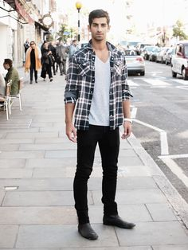

In a trend conscious society, we as SF Fashion are dedicated to help you stand out from the rest, and help turn you into a trend setter not a trend follower. To help you with reach your inner trend setter we have provided just a few tips you will learn when signing up to SF Fashion.
Keep your attire simple, and remember, "Sipmle is sophisticated." Do not be afraid to Experiment, those who experiment are those to trend set.
Remembering simplicity is key, stay clear of baggy, loose garments. Do not over compensate in color or pattens, this could lead to you looking like a walking carnival. Finally never over compensate with accessories, two accessories should be a wearable maximum.
Over the past few years San Francisco has become a major player in the fashion industry, from the rise of the Fashion Fest, showcasing the up and coming trends to SF Fashion week attracting some of thee greatest designers to our city. San Fran has a global stack in mens fashion and that is why SF Fashion came into being. With our industry leading advisers SF Fashion is here to help you with your every need in staying ahead of the trends and making sure you are the best dressed man in the room.
SF Fashion is designed to be your personal guide to the latest fashion trends, with a team of designers and trend analysts we are committed to keeping you ahead of your fellow man is attire.